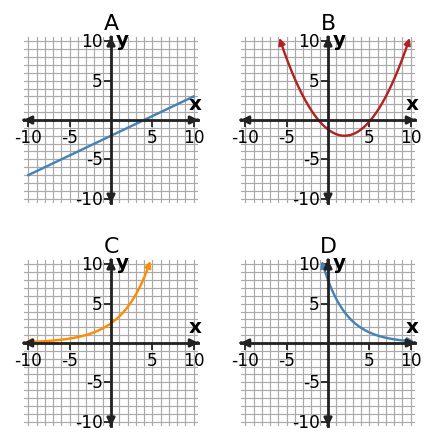
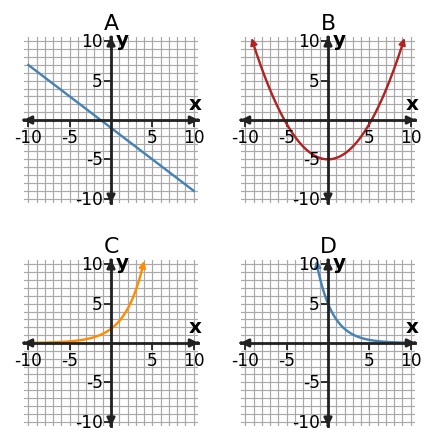

1. Classify $y=5(\frac{4}{5})^x$ as linear, quadratic, or exponential. State the structural feature that identifies the family.
2. Graphs A, B, C, and D show different function-family behavior. Identify the linear graph, the quadratic graph, and the two exponential graphs. For one choice, explain the graph feature you used.

3. Use first differences, second differences, or ratios to classify the table.
| x | y |
|---|---|
| 0 | 2 |
| 1 | 6 |
| 2 | 18 |
| 3 | 54 |
| 4 | 162 |
4. At the single input $x=4$, compare $L(x)=4x+5$, $Q(x)=x^2+3$, and $E(x)=2^x$. Which has the greatest output at this input? Explain why this one-input comparison alone does not prove which family grows fastest in the long run.
5. A student says the table is exponential because the outputs increase by the same amount. Critique the claim using successive-change evidence.
| x | y |
|---|---|
| 0 | 6 |
| 1 | 10 |
| 2 | 14 |
| 3 | 18 |
| 4 | 22 |
6. Table C has outputs 1,4,9,16,25. Classify the family and name the representation feature that supports the classification.
7. For nonnegative integer inputs, compare $L(x)=4x+7$ and $E(x)=3(2)^x$. Find the first integer input at which the exponential model has the larger output. Show enough values to justify that it is the first.
8. The area of a square is recorded as its side length $s$ changes, so $A=s^2$. Which function family models area versus side length? Explain.
9. The equation is $y=4(2)^x$. Use both the equation and the table as evidence to classify the function family.
| x | y |
|---|---|
| 0 | 4 |
| 1 | 8 |
| 2 | 16 |
| 3 | 32 |
10. Classify the relationship represented by the table as linear, quadratic, or exponential. Cite the output pattern that supports your choice.
| x | y |
|---|---|
| 0 | $\displaystyle 5$ |
| 1 | $\displaystyle \frac{20}{3}$ |
| 2 | $\displaystyle \frac{80}{9}$ |
| 3 | $\displaystyle \frac{320}{27}$ |
| 4 | $\displaystyle \frac{1280}{81}$ |
11. Classify $y=4x-7$ as linear, quadratic, or exponential. Identify the structural feature of the equation that supports your answer.
12. Use the four graphs to identify the two exponential graphs. Which shows growth and which shows decay?

13. Use successive changes to classify the table as linear, quadratic, or exponential.
| x | y |
|---|---|
| 0 | 6 |
| 1 | 10 |
| 2 | 14 |
| 3 | 18 |
| 4 | 22 |
14. At $x=5$, compare the outputs of $L(x)=3x+1$, $Q(x)=x^2+1$, and $E(x)=2^x$. Which is greatest at this input? Then state why one input is insufficient to decide the long-run growth pattern.
15. A student says the table is exponential because every output is larger than the one before. Critique the claim using successive-change evidence.
| x | y |
|---|---|
| 0 | 7 |
| 1 | 12 |
| 2 | 17 |
| 3 | 22 |
| 4 | 27 |
16. Table A has outputs 7, 11, 15, 19 for equal input steps. Classify the family and name the representation feature that supports the classification.
17. For nonnegative integer inputs, compare $L(x)=5x+8$ and $E(x)=3^x$. Find the first integer input at which the exponential model has the larger output. Show enough values to justify that it is the first.
18. A population increases by 25% every year. Which function family best models population versus time? Explain.
19. Choose an efficient method to solve $\displaystyle x^{2} + 8 x=0$, then solve. Briefly justify the method choice.
20. For $x^2-10x+25=0$, compare two possible solving methods and choose the more efficient one. Then solve.
21. Which solving method would you choose first for $x^2+4x-1=0$? Explain the structural clue, then solve.
22. For $y=2(x-3)^2-5$, name the quadratic form and state one key feature that this form reveals directly.
23. Rewrite $f(x)=x^{2} - x - 6$ in factored form, then use that form to state the zeros.
24. You need to read the two zeros of a quadratic model as directly as possible. Which form—standard, vertex, or factored—is the best starting representation, and why?